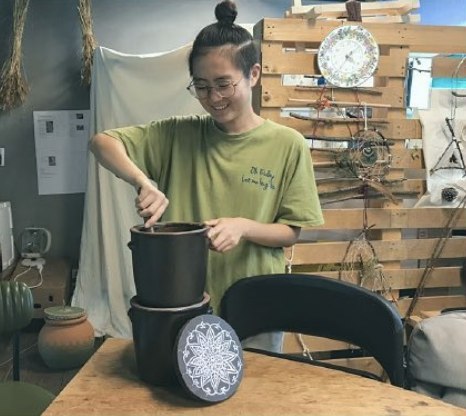
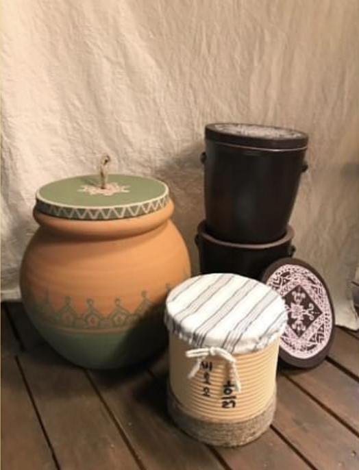
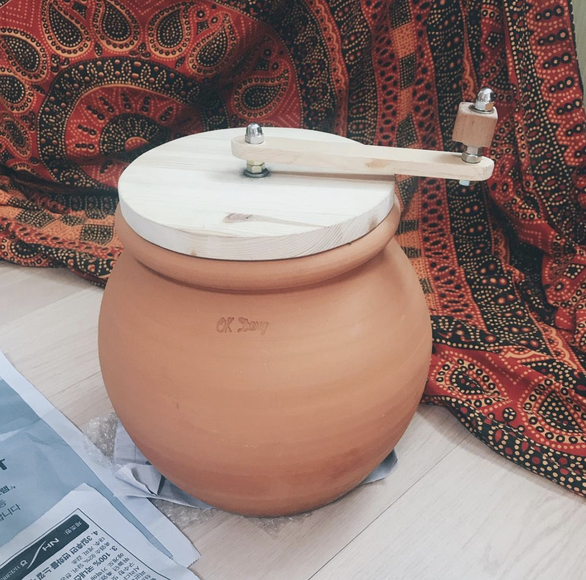
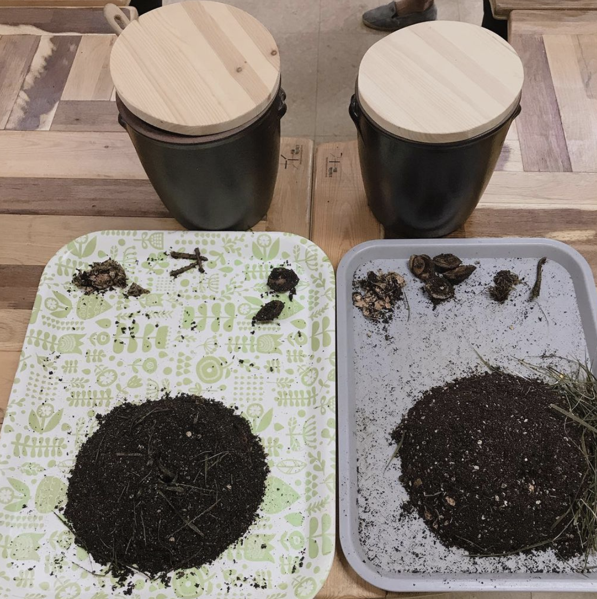
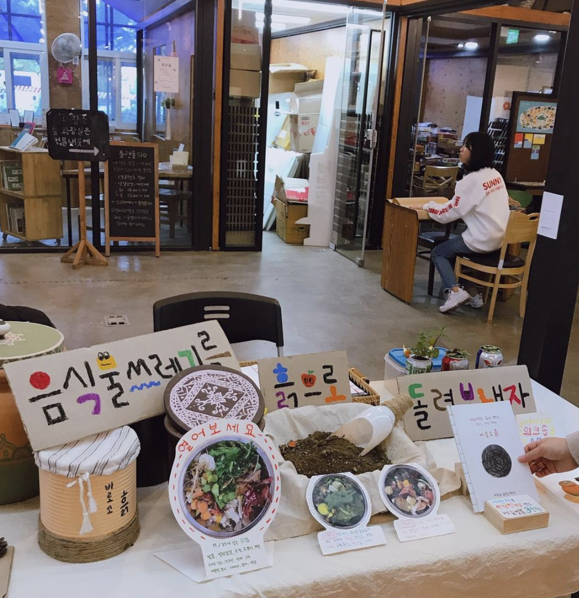
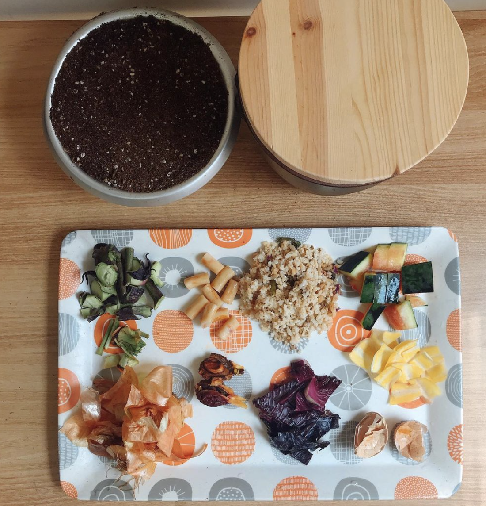
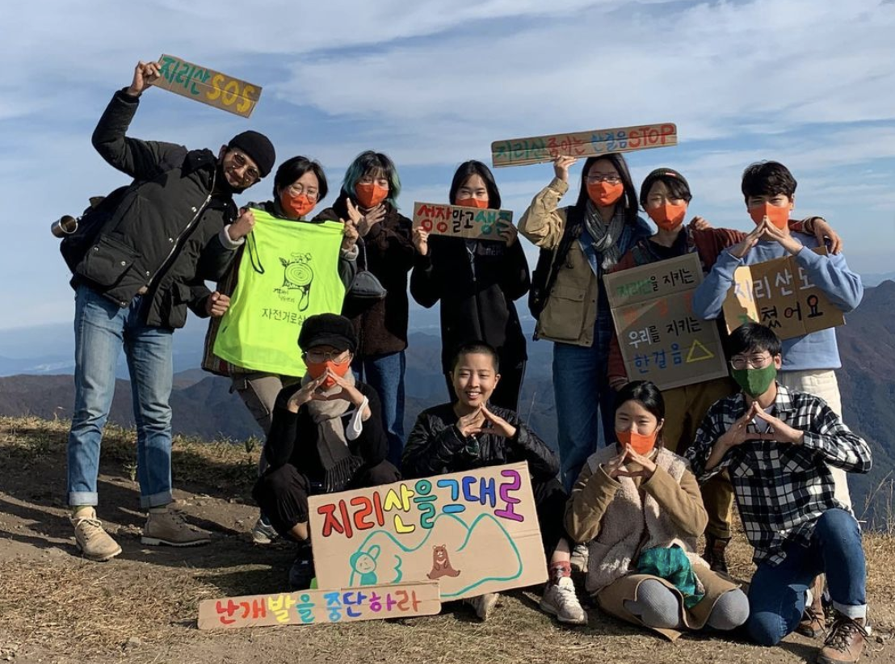
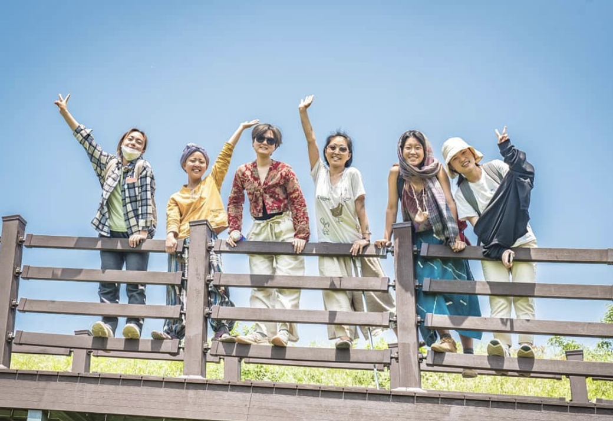

       
<비로소 흙> 프로젝트를 통해 작은 지구를 만든 꼬리
안녕하세요. 꼬리. 먼저 자기소개 부탁드릴게요.
저는 2019년부터 <비로소 흙>을 연구하고 워크숍을 해오고 있는 꼬리라고 합니다.
요새 어떻게 지내요?
요새는 대학에 복학해서 도시에서 살게 되었어요. 올해부터 도시에 살게 돼서 학교생활 하면서 지내고 있어요.
그 전에는 혹시 어디 사셨나요?
원래 계속 도시에 살다가 작년 한 해 처음으로 시골에 내려가서 남원시에 있는 마을에 가서 시골살이를 1년 동안 했죠. 거기서도 텃밭 농사짓고 마을 일도 하고 축제도 열어보면서 지냈어요.
작년에 계속 활동했던 <비로소 흙> 프로젝트를 설명해주세요.
제가 2019년에 ‘비전화공방’이라는 곳을 다니면서 적정 기술을 배웠어요. 지금은 하이테크놀로지의 시대잖아요. 하이테크놀로지이기 때문에 기술에 접근하지 못하는 계층들이 생겨나고, 그런 문제들을 해결하기 위해서 테크를 낮추는 게 로우테크놀로지입니다. 에너지가 많이 들지 않는 기술만을 이용해서 삶을 유용하게 하는 게 적정 기술이에요.
저는 썩는 것에 관심이 많았어요. 음식물을 어떻게 흙으로 돌려보낼 것인가에 대한 개인적인 궁금증으로 출발했어요. 연구하다가 ‘이거 생각보다 되게 간단한 건데 모르고 살았네!’ 하는 깨달음이 있었고, <비로소 흙>이라는 주제를 잡아서 워크숍을 만들어 본 거죠.
그럼 어떤 활동을 꾸준히 했었나요?
그 워크숍을 선보이기 전에 세 달 동안 제가 직접 연구를 했어요. 음식물 쓰레기를 모아서 다양하게 썩히는 방법들을 경험해보았어요. 경험이 쌓인 뒤에 워크숍을 기획했습니다. 퇴비함을 스티로폼으로 만들고 쓰는 방법을 알려주고 같이 꾸미는 워크숍이었는데 참여자들이 많았어요.
여러 적정 기술이 있잖아요. 어쩌다 썩는 것에 관심을 더 두게 되었는지 궁금합니다.
내 삶에 진짜 필요한 게 무엇인지 고민했어요. 그때 자취를 하고 있었는데 제일 큰 골칫거리가 음식물 쓰레기 처리 문제였어요. 왜냐하면 혼자 아니면 둘이 살다 보니까 양이 많이 나오지도 않아서 자꾸 쌓이는데 내다 버릴 수는 없고. 제일 짧은 음식물 봉투를 사도 너무 오래가는 거예요. 그래서 냉동실에 넣어놓는데, 또 냉동실에 넣어놓으면 그 균이 또 냉동실 퍼진대요. 그게 죽는 게 아니라요.
그리고 다른 계기로는, 그때쯤 자연식물식을 시작하면서 거의 조리하지 않는 채로 먹었어요. 그러니까 나오는 음식물 쓰레기가 더러운 형태의 모습이 아니라 그냥 사과 껍질같은 것들이었어요. 그래서 ‘이게 쓰레기인가’하는 의문이 생겼어요. 그래서 ‘이상하네? 옛날에는 어떻게 했을까?’ 이런 질문이 들던 차에 퇴비함을 만나게 된 거죠.
예전 우리나라나 다른 나라의 여러 퇴비함 사례가 궁금해요.
우리나라는 토양 자체가 되게 척박한 토양이래요. 퇴비를 굉장히 중요하게 생각했고요. 그래서 남의 집에서 똥 싸지 말라는 얘기가 나왔던 거죠. 제 연구에서 중요했던 지점은 ‘원룸에서 어떻게 해결할 것인가?’ 였습니다. 똥간도 다 밖에 있잖아요. 저는 땅도 없고요. 해외나 국내 자료에 퇴비간이라고 쳐보시면 텃밭에 만드는 방식이 많은데 그냥 비만 막을 수 있는 정도로 만들어졌어요. 그렇다고 전기 쓰는 퇴비함 음식물 처리기를 사기에는 77만 원인가 그래요. 또 에너지도 계속 쓰게 되고요. 이것저것 찾아보다가 인도에서 쓰는 퇴비함 모델을 발견했어요. 빈부격차 때문인지 원래 가지고 있던 지혜가 많아서인지 인도에는 적정기술을 이용한 게 많아요. 인도에서 하는 퇴비 방식이 아파트 빌라에서 하는 방식이더라고요. 그걸 보고 ‘나도 할 수 있겠다!’ 싶었던 것 같아요.
지금도 원룸에서 하고 있나요?
네. 인도는 토분이지만, 한국은 항아리! 버려진 항아리를 주워서 하고 있어요.
저도 한 달 해보고 있는데 가장 곤란했던 게 흙 구매와 퇴비된 흙 사용 방법이었어요.
도시에서 워크숍을 하면 제일 많이 듣는 질문과 제일 난감한 질문 1위입니다. 흙을 구하라고 해도 도시에 진짜 흙이 없어요. 근데 저는 그것도 되게 중요한 발견이라고 생각이 드는 거죠. 발견 과정 자체가 좀 더 지구랑 연결되는 과정이라는 생각이 들었어요. 이렇게 대답해요. 저도 난감하니까. (웃음)
지금까지 나온 퇴비는 어떻게 사용했나요?
저는 본가가 강화도 시골이어서 그쪽으로 보내기도 했고요. 주말 텃밭에 쓰기도 했고요. 가끔 막 가로수에 뿌려버리고 그랬어요. (웃음) 그게 그냥 흙이잖아요. 냄새도 안 나고.
매달 흙도 구매하시나요?
그렇죠. 흙을 아예 큰 포대로 사놓고 해요. 왜 흙을 갈아줘야 하냐면요. 아주 작은 양의 흙에 많은 음식물을 넣으면 그 흙이 포화 상태가 돼버립니다. 흙도 순환이 되어야 해요. 우리가 넣는 음식물이 영양이 되고 그 바탕으로 뭔가 자라나고. 그러니까 텃밭이 있는 분들은 퇴비된 흙에 식물을 기르고, 다 기르고 나면 흙에 있던 영양이 손실되니까 다시 음식물 넣어서 처리할 수 있는 상태가 되는 거죠. 순환해서 쓸 수 있게 됩니다.
배양토를 계속 구매해야 하는 게 좀 고민이었어요.
아예 그냥 화분을 만드는 게 좋을 수도 있어요. 배양토가 분갈이 용이잖아요. 텃밭 상자를 만들어서 상추 같은 거 심고 쓰다가 겨울 되면 그 흙을 다시 음식물 처리용으로 쓰면 돼요. 그 흙은 1년 지나고 나면 척박해져 있을 테니까요. 근데 더 부지런해야 하죠. 각박한 현대사회에서는 하기 힘들 수 있다. 이렇게 제가 또 귀촌으로 유인하는 거로. (웃음)
혹시 채식하지 않는 사람도 할 수 있는 방법이 있을까요?
그럼요. (거의 판매왕) 육식하시는 분들도 채소를 안 먹는 건 아니잖아요. 내가 먹는 모든 걸 다
퇴비함으로 처리하겠다는 마음보다 처음 시작할 때는 실험하듯이 접근하면 좋겠어요. 조금의 양이라도. ‘이거 한번 넣어볼까? 이거 없어질까?’하는 마음으로 넣어보고 확인해보는 게 중요한 것 같아요.
사실 육류가 흙으로 안 돌아가는 건 절대 아니에요. 생선이나 뼈 다 가능한데 시간이 엄청 오래 걸리고 그 작은 통이 감당할 수 있는 게 아니기 때문에 못 넣는 거죠.
그럼 꼬리는 지금까지 퇴비함 쓰면서 어떤 일상의 변화가 있었나요?
저는 진짜 퇴비함 쓰면서 감동 받았던 게 있어요. 사실 좀 안 믿었거든요. 생각해 봐요. 음식물 쓰레기를 흙 안에 넣어놓고 뒤적거리는 작업을 했더니 2주 뒤에 다 사라졌어요. 너무 신기했어요. 근데 이걸 누가 하나!? 미생물이 하는 거예요. 그 흙 안에 있는 미생물이. 보이지 않는 곳에서 자기 역할을 하는 존재들이 있기 때문에 이 세계가 굴러가는 거죠.
또 하나는 어쨌든 계속해서 퇴비가 만들어지잖아요. 퇴비가 만들어지니까 이걸 쓰는 궁리를 하기 시작하는 거죠. 저는 원래 화분도 잘 죽이는 사람인데요. 배양토도 있고 만들어놓은 퇴비도 있으니까 그걸 섞어서 생명을 피워내는 그런 작업을 구상해보게 되는 거죠. 그런 게 이제 농사로 이어지기도 하고요. 이렇게 일상이 많이 변했던 것 같아요.
그리고 음식물 쓰레기를 바라보는 관점도 변했어요. 예전에는 더럽고 구역질 나는 걸로 봤는데 지금은 흙 안으로 음식물이 들어가면 만져보기도 해요. 저는 제일 신기했던 건 수박껍질이 없어졌을 때에요. 그 두꺼운 게. 수박껍질을 먹지 않는 이상 저는 못 하는 일이잖아요. 나는 불가능한데 보이지도 않은 존재는 가능하게 한다.
그리고 퇴비함을 쓰면서 배웠던 것은 무엇이 있나요?
도시적인 삶에 맞춰야 해서 빨리 퇴비하는 것을 중요한 과제로 여겼어요. 보통은 퇴비를 그냥 쟁여두는데요. 위에 음식물 넣고 밑에 톱밥 같은 거 넣고 다시 음식물, 톱밥 같은 거. 이렇게 딱 쌓아놓고 그냥 기다리는 건데요. 언젠가 흙이 되기는 하는데 되게 오래 걸려요. 1년도 걸리고 되게 오래 걸립니다. 근데 쌓아두는 게 아니라 삽으로 뒤적여주는 작업을 하면 공기랑 만나는 미생물들이 활동하기 시작하면서 발효가 빨리 됩니다. 퇴비화가 빨리 된다고 하더라고요.
똥 퇴비에도 관심이 생겼는데요. 옛날 뒷간은 오줌이랑 똥이랑 다 같은 곳에 모이는 방식인데요. 그게 냄새도 나고 똥독도 있잖아요. 아무튼 뒷간이라고 하는 게 되게 가기 싫은 공간처럼 우리가 기억하고 있어요. 똥이나 음식물 퇴비는 공기가 통해야지 잘 퇴비가 되고 냄새가 안 나거든요. 근데 오줌은 공기랑 차단된 상태로 퇴비가 돼야지 냄새가 안 나고 유용하게 쓸 수 있어요. 오줌이랑 똥을 받는 곳을 분리해서 뒷간을 만들면 그렇게 향기가 날 수 없어요. 냄새가 안 나요. 향기까지는 오버고. (웃음)
그리고 퇴비함을 쓰면서 벌레가 딱 한 번 생겼어요. 제가 방치를 해서 벌레가 생긴 적이 있는데 구더기들이 막 있는 거예요. 그냥 싫은 경험으로 넘길 수도 있겠죠. 그런데 나중에 찾아보니까 그게 동해 등에라는 곤충의 유충이라는 거예요. 그냥 구더기가 아니라. 동해 등에가 지렁이만큼이나 음식물 쓰레기를 처리하는 것에 매우 많은 역할을 하는 유충이더라고요. 알고 나니까 벌레를 보는 마음이 또 달라지는 거죠.
4인 가족도 퇴비함을 쓸 수 있을지 궁금합니다.
1인 가구였던 저를 시작으로 만들었던 워크숍이기 때문에 이 모델 자체가 많은 인원수를 염두하고 만든 게 아니었어요. 음식물 양이 엄청 많이 나와서 스티로폼 박스도 점점 커져요. 크기가 크면 손으로 섞는 과정도 힘들어요. 원래 가지고 있던 퇴비함 모델이 돌리면서 섞는 방식이었어요. 원통에 음식물을 넣고 그 통 자체를 돌리는 거예요. 그게 후지무라 센세가 갖고 있던 적정기술 비전화 방식의 모델이었어요. 레버를 달아서 돌리면 힘이 없는 사람들도 누구나 할 수 있는 거예요. 많은 양의 퇴비를 해야 할 때는 이 모델을 소개해드리는 정도로 답했어요.
재밌었던 일화가 있는데요. 50-60대분들과 워크숍을 진행했어요. 꾸미기 작업을 진행하려고 붓과 매직을 가져다드렸는데 한 분께서 크게 ‘손대지마' 라고 쓰시는 거에요. 저는 너무 깜짝 놀랐어요. (웃음) 왜 이렇게 쓰셨냐고 여쭤봤더니 그분의 가족들이 이거 뭐 하는지 모르고 갖다 버릴 수도 있어서 경고를 미리 써놔야 한다고 하셨어요. (웃음) 여러 사람과 살면 이런 애로사항이 생길 수도 있구나… 이런 일화였습니다.
집에서 할 수 있는 다른 환경운동이 어떤 게 있을까요?
제가 퇴비함을 연구했을 때 그냥 총체적으로 제 삶을 연구하는 기간이었어요. 일상생활을 송두리째 바꿨거든요. 저는 물에 대한 이슈도 관심이 많았거든요. 욕실을 생각했을 때 물을 쓰는 곳이 되게 많잖아요. 식수도 있고 세탁기도 있고 내 몸을 씻는 물도 있고 변기 물이 있죠. 이걸 다 우리는 상수도로 깨끗한 물로만 다 처리한다는거죠. 변기 물도 엄청 많은 양의 깨끗한 물을 쓰고요. 그리고 샤워도 되게 오랫동안 하면은 물이 많이 쓰여요. 그런데 그런 생각이 드는 거죠. 샤워한 물로 빨래하고, 그렇게 빨래한 물로 변기 내리면 안 되나? 처음 했을 때 같이 사는 파트너와 했어요. 파트너가 굉장히 급진파였어요. 제 일상을 다 바꿔놨습니다. (웃음) 샤워할 때는 대야에 들어가서 씻고 모여진 물을 큰 통에다가 받아놨다가 손빨래했어요. 아니면 변기 물 내릴 때 부어서 물을 좀 아끼는 그런 실험도 했었어요.
작년에 시골 살 때는 플라스틱 이슈가 컸어요. 에코 브릭이라는 게 있어요. 비닐 쓰레기들이 재활용이 안 돼요. 그냥 다 매립이 돼요. 1.5L짜리 페트병에 비닐들을 쑤셔 넣는 거예요.
꼬리는 계속 뭔가를 바꿔 나가고 있는데 원동력은 무엇인가요?
저는 처음에 책임감 같은 거로 시작했던 것 같아요. 기후위기나 환경 문제에 관심이 있다 보니까 내가 변하지 않고서는 못 배기는 게 있었어요. 근데 모든 것이 다 그래요. 책임감이 죄책감으로 되어서 원동력이 되면 지속 할 수 있지 않아요. 나중에는 사랑에서 오는 책임감으로 해야 한다는 걸 많이 느끼고 있어요. 그렇게 하려고 해요. 죄책감이나 분노를 가지고 발현시키는 게 아니라 진짜 어떤 존재에 대한 사랑으로 발현했을 때 훨씬 더 효과적이고 긍정적인 원동력이 됩니다.
요새는 도시에 살잖아요. 이제 어떤 일을 하고 싶은지 궁금해요.
제가 계속 도시에 살 건 아니라서요. 기간제 도시 생활을 하고 있어서 도시에서 뭘 하겠다는 건 크게 없어요. 누리려고 하는 것들은 있어요. 수영을 배운다던가. 그런데 제가 대학을 오게 된 이유는 사람을 만나고 얘기를 나누고 마음을 이해하는 일에 관심이 많기 때문이에요. 여러 가지 사회적인 이슈를 사람을 만나면서 풀어낼 것 같다고 생각해요. 그것에 대한 초석을 잘 쌓고 싶어서 좋은 관계 맺는 법을 배우고 있어요. 어디 가서도 사람들을 만나서 하는 일들을 하게 될 것 같아요. 교육이라든지.
마지막으로 하고 싶은 말이 있나요?
이것도 저는 계속 끝날 때마다 항상 마지막으로 하고 싶은 얘기라고 하면서 하는 얘기인데요. 아까도 얘기했지만 가벼운 마음에서 하는 게 중요하고요. 이게 사회적으로 옳은 일이라는 것도 있겠지만 그 동기보다 내가 진짜 직접 해봤는데 신기하고 재밌고 봉투에 음식물 처리하는 것보다 즐겁다는 경험을 하는 게 중요하다는 생각이 듭니다.